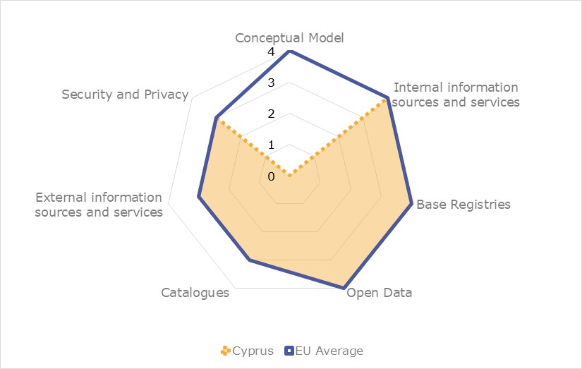
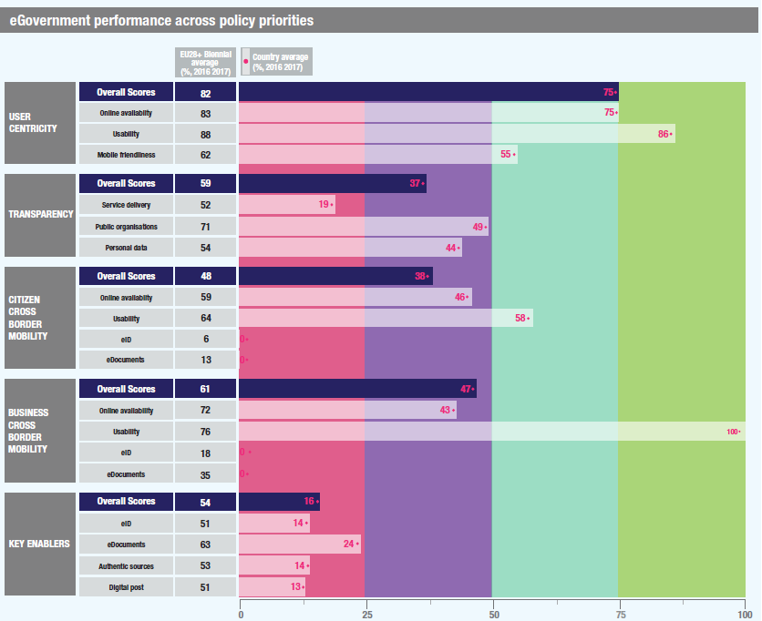

Digital Public Administration factsheet 2021
Lithuania
Digital Public Administration factsheet 2022
Table of Contents
2 Digital Public Administration Highlights 10
3 Digital Public Administration Political Communications 13
4 Digital Public Administration Legislation 20
5 Digital Public Administration Governance 30
6 Digital Public Administration Infrastructure 34
7 Cross-border Digital Public Administration Services for Citizens and Businesses 44
.
Country
Profile
1
Country Profile
Digital Public Administration Indicators
The following graphs present data for the latest Digital Public Administration Indicators for Lithuania compared to the EU average. Statistical indicators in this section reflect those of Eurostat at the time the Edition is being prepared.
Percentage of individuals using the internet for interacting with public authorities in Lithuania | Percentage of individuals using the internet for obtaining information from public authorities in Lithuania | ||
Percentage of individuals using the internet for downloading official forms from public authorities in Lithuania | Percentage of individuals using the internet for submitted completed forms to public authorities in Lithuania | ||
Interoperability State of Play
In 2017, the European Commission published the European Interoperability Framework (EIF) to give specific guidance on how to set up interoperable digital public services through a set of 47 recommendations. The picture below represents the three pillars of the EIF around which the EIF Monitoring Mechanism was built to evaluate the level of implementation of the EIF within the Member States. It is based on a set of 71 Key Performance Indicators (KPIs) clustered within the three main pillars of the EIF (Principles, Layers and Conceptual model), outlined below.

Source: European Interoperability Framework Monitoring Mechanism 2021
Source: European Interoperability Framework Monitoring Mechanism 2021
Source: European Interoperability Framework Monitoring Mechanism 2021
Source: European Interoperability Framework Monitoring Mechanism 2021
eGovernment State of Play
The graph below presents the main highlights of the latest eGovernment Benchmark Report, an assessment of eGovernment services in 36 countries: the 27 European Union Member States, as well as Iceland, Norway, Montenegro, the Republic of Serbia, Switzerland, Turkey, Albania and Macedonia (referred to as the EU27+).
The study evaluates online public services on four dimensions:
- User centricity: indicates the extent to which a service is provided online, its mobile friendliness and its usability (in terms of available online support and feedback mechanisms).
- Transparency: indicates the extent to which governments are transparent about (i) the process of service delivery, (ii) policy making and digital service design processes and (iii) the personal data processed in public services.
- Cross-border services: indicates the extent to which users of public services from another European country can use the online services.
- Key enablers: indicates the extent to which technical and organizational pre-conditions for eGovernment service provision are in place, such as electronic identification and authentic sources.
The 2022 report presents the biennial results, achieved over the past two years of measurement of all nine life events used to measure the above-mentioned key dimensions. More specifically, these life events are divided between seven ‘Citizen life events’ (Starting a small claim procedure, Moving, Owning a car, Health measured in 2021, and Career, Studying, Family life, measured in 2020) and two ‘Business life events’ (Regular Business Operations, measured in 2021, and Business start-up, measured in 2020).

Source: eGovernment Benchmark Report 2022 Country Factsheets

Digital Public Administration Highlights
2
Digital Public Administration Highlights
Digital Public Administration Political Communications |
| Digital Public Administration Legislation |

In the beginning of 2021, the Ministry of Economy and Innovation prepared amendments to the Law transposing the provisions of Directive (EU) 2019/1024 on open data and the re-use of public sector information. The amendments address obligations on opening data and seek to increase re-use of publicly funded information and bring the legislative framework up to date with the advances in digital technologies. The amended Law on the Right to Receive Information and Re-use of Data entered into force on 17 July 2021.
In order to foster the Internet of Things, the amendment to the Law on Electronic Communications was introduced and it ensures the right of users to public electronic communications services from 2023 with devices with integrated subscriber identification modules (eSIM) and also the right of users to change the provider of a publicly available electronic communications service remotely.
 | Digital Public Administration Governance |
| Digital Public Administration Infrastructure |

In 2021 the eGovernment gateway portal had 155,6 million visitors (28.9 million visitors in the first two months of 2022). In 2021, the portal provided access to over 606 eServices.
A new generation Internet access infrastructure is being developed in white areas, where the market cannot ensure the development of this infrastructure. This project, with a total value of 49,5 million euros, financed by EU funds and state budget is planned to be implemented in 2022.
Digital Public Administration Political Communications
3
Digital Public Administration Political Communications
Specific political communications on digital public administration
Berlin Declaration on Digital Society and Value-Based Digital Government
State Digitalisation Development Programme for 2021–2030
In 2021, the main digitalisation document, the State Digitalisation Development Programme for 2021–2030, was approved. This programme sets out the following priorities for digitalisation:
- Consolidating State information resources, and information technology (IT) infrastructure and services;
- Ensuring reliable public sector data and the possibility to share them across sectors;
- Developing advanced tools and technological solutions, and integrate them into electronic services to ensure interoperability, security, convenience and accessibility (especially for people with disabilities) of these services, not only at national but also at cross-border level, giving priority to the development of advanced solutions based on artificial intelligence (AI), natural language processing and comprehension machine learning, data analytics, electronic identification and trust; and
- Increasing digital competencies, as they are necessary in everyday life to meet the growing need to behave safely in the online space, understand about AI and the Internet of Things, and be able to use smart devices.
Digital Agenda Council
- prepare strategic planning documents in the field of digitalisation in Lithuania;
- make proposals on digitalisation priorities, and evaluate the goals and objectives of the implementation of digitalisation priorities;
- monitor how the digitalisation initiatives contribute to the implementation and achievement of the goals and take into account the results, so as to provide conclusions and proposals on the further development of Lithuanian digitalisation; and
- coordinate digitalisation initiatives and draw conclusions on the appropriateness of the project proposals submitted by the institutions that contribute to the implementation of digitalisation priorities.
The Council is chaired by the Vice-Minister of Economy and Innovation.
Interoperability
Baseline for a National Interoperability Framework
In 2021, the State Digitalisation Development Programme for 2021–2030 was approved. According to the programme, one of the priorities in the field of digitalisation is consolidating State information resources, and IT infrastructure and services. In this context, the programme ensures precisely further consolidation of the State’s information resources infrastructure, as well as the interoperability of State information resources.
The State Information Resources Management Law regulates the principles of the interoperability of registers along with the platform of interoperability of State information systems.
Key enablers
Access to public information
Data Opening
The Ministry of Economy and Innovation, which defines the open data policy in accordance with the recommendations of the European Union (EU) and the Organisation for Economic Cooperation and Development (OECD), ensures that the provisions of the EU legal acts on open data and reuse of public sector information are implemented in the programme.
Overall, data opening is currently being harmonised, focusing on automated processes and on establishing an organisational structure in the institutions.
eID and Trust Services
No political communication was adopted in this field to date.
Security aspects
National Cybersecurity Strategy
Interconnection of base registries
No political communication was adopted in this field to date.
Domain-specific political communications
Operational Programme for EU Structural Funds Investments
eHealth System Development Programme
Emerging technologies
Artificial Intelligence (AI)
- Legal and ethical perspective;
- AI ecosystem and Lithuania;
- AI in the Lithuanian economy;
- Skills and competences; and
- Research and development.
Declaration on AI in the Nordic-Baltic Region
- Improving opportunities for skills development with the goal of enabling more authorities, companies and organisations to use AI;
- Enhancing access to data for AI to be used for better service to citizens and businesses in the region;
- Developing ethical and transparent guidelines, standards, principles and values to guide when and how AI applications should be used;
- Ensuring that infrastructure, hardware, software and data, all of which are central to the use of AI, are based on standards, enabling interoperability, privacy, security, trust, good usability and portability; and
- Ensuring that AI gets a prominent place in the European discussion and implementation of initiatives within the framework of the Digital Single Market;
- Avoiding unnecessary regulation in the area, which is under rapid development; and
- Utilising the structure of the Nordic Council of Ministers to facilitate the collaboration in relevant policy areas.
Distributed ledger technologies
No political communication was adopted in this field to date.
Big data
No political communication was adopted in this field to date.
Cloud computing
No political communication was adopted in this field to date.
Internet of Things (IoT)
Study on the Use of Integrated eSIM
High-performance computing
No political communication was adopted in this field to date.
High-speed broadband connectivity
- until 2022, in at least one of the five largest cities of the Republic of Lithuania by population - Vilnius, Kaunas, Klaipėda, Šiauliai or Panevėžys;
- until 2023, in the five largest cities of the Republic of Lithuania by population; and
- until 2025, in urban areas, on international land transport corridors (Via Baltica, Rail Baltica) and other main motorways and arterial railway lines of State importance, as well as in airports and seaports.
National Broadband Plan
- Implementation of a broadband communication infrastructure with a speed of at least 100 Mbps in the ‘white’ rural areas of the country by building communication towers and laying fiber-optic cable lines; and
- Development of a gigabit broadband infrastructure for digitally sensitive entities (private companies, non-governmental and governmental organisations, municipalities and municipal companies).

Digital Public Administration Legislation
4
Digital Public Administration Legislation
Specific legislation on digital public administration
Decree on the Government Programme Implementation Plan
The Decree on the Government Programme Implementation Plan (2021—2024) was adopted on 10 March 2021. Most eGovernment-related goals are in section 9.2 of the decree, titled ‘360° eGovernment’. It encompasses: (i) the development of a State data architecture; (ii) the implementation of a new stage of centralisation of State IT services; (iii) the creation of State information resources and a digital transformation management mechanism; (iv) the use of mandatory basic components (rights management, interoperability, classifications, metadata structures, functional requirements, opening, eServices, etc.); (v) the development and implementation of a digital skills competency model in the civil service; (vi) the creation of the necessary conditions for businesses to create innovative and convenient technological solutions for consumers; and (vii) the promotion of a transfer of public services provision to businesses.
Law on Public Administration
The new wording of the Law on Public Administration was adopted in the Seimas in order to (i) improve the management of public sector bodies; (ii) clarify the competences and optimise the administrative structures of public sector bodies; (iii) refine the scope of public administration; (iv) clarify the concepts of public administration, administrative regulation and public service so that they are well understood; (v) improve public service administration; (vi) refine the concept of public service so that it is easier to identify public services and separate them from administrative services and other functions; (vii) spell out the administrative decision-making process; (viii) eliminate the excessive regulation related to the submission and processing of applications; (ix) adjust other legal provisions taking into account practical application problems; and (x) update the legal regulation of economic entities. The law entered into force on 1 November 2020.
Interoperability
No relevant legislation was adopted in this field to date.
Key enablers
Access to public information
Law on the Right to Receive Information and Reuse of Data
The original Law on the Right to Receive Information from State and Local Authorities and Institutions of 2000 was amended to comply with the PSI Directive (2003/98/EC). The amended law (No. X-383 of 10 November 2005) transposed the directive, and regulated the right of private companies and citizens to obtain information from central and local government and to reuse it. It defined the use of public sector information resources and determined the obligation of central and local government to provide this type of information to all those concerned.
The transposition of the Directive of the European Parliament and the Council 2013/37/EU amending Directive 2003/98/EC on the Re-Use of Public Sector Information (PSI) into the national law occurred with the adoption of amendments to the Law on the Right to Receive Information from State and Local Authorities and Institutions (No. XII-2666 of 11 October 2016). The amended law increased the scope of information intended for reuse, including in libraries, museums and archives, which account for a significant part of the public sector information resources, in particular upon the increase in digital materials as a result of the implementation of digitisation projects. The new law also established the conditions for the open licence to use public sector information based on the creative commons licence. This will enable an information recipient to publish the information received without obtaining any institutional consent and by any method (including making it public online or by means of other electronic communications networks, reproducing it in any format or by any method, translating it into other languages, adapting, processing or remaking it, and distributing or transmitting it to third parties). Finally, the law established as well the use of open electronic data formats in the provision of data.
The law was amended again in 2018 to transpose the Directive (EU) 2016/2102 of the European Parliament and of the Council on the accessibility of websites and mobile applications of public sector bodies.
In the beginning of 2021, the Ministry of Economy and Innovation prepared new amendments to the law transposing the provisions of Directive (EU) 2019/1024 on open data and the re-use of public sector information. The amendments address obligations on opening data, and seek to increase reuse of publicly funded information and bring the legislative framework up to date with the advances in digital technologies. The amended Law on the Right to Receive Information and Reuse of Data entered into force on 17 July 2021.
General Requirements for Websites and Mobile Applications of State and Municipal Institutions and Bodies
The General Requirements for Websites and Mobile Applications of State and Municipal Institutions and Bodies (hereinafter referred to as the General Requirements) were approved by Resolution No. 480 of the government of the Republic of Lithuania on 18 April 2003. The General Requirements transposed the provisions of the Directive (EU) 2016/2102 on the accessibility of the websites and mobile applications of public sector bodies.
The purpose of the General Requirements is to enable the public to access online all public information referred to in Article 5(2) of the Law on the Right to Receive Information from State and Local Authorities and Institutions, to unify the websites of all institutions and bodies, and to ensure the relevance, reliability and searchability of the information provided on them. Furthermore, they contain provisions on the development of websites that meet the needs of the public, the regular updating of information, the accessibility requirements for the adaptation of websites or mobile applications of institutions, the procedure for the adaptation of websites or mobile applications of institutions to the accessibility requirements, and the procedure for the lodging of complaints regarding the non‑adaptation or inadequate adaptation of websites or mobile applications of institutions to the accessibility requirements.
eID and Trust Services
eIDAS
In 2020, Lithuania successfully completed the procedures set out in the Regulation on electronic identification and trust services for electronic transactions in the internal market (eIDAS Regulation) for the notification of a Lithuanian electronic identification scheme that would be recognised at cross-border level in the EU internal market. The procedure confirmed that the electronic identification scheme, according to which the identity cards of the Republic of Lithuania are issued, complies with a high level of security and reliability.
In accordance with the requirements of the eIDAS Regulation, Lithuania has implemented and operates the National Electronic Identification Information System (eIDAS node). The manager of this information system is the Information Technology and Communications Department under the Ministry of the Interior of the Republic of Lithuania. This institution has implemented and maintains the centralised technical solutions set out in the eIDAS Regulation that ensure secure and reliable cross-border authentication when the identity cards of the Republic of Lithuania are used as a means of electronic identification for obtaining online services in another State of the EU and European Economic Area.
Law on Electronic Identification and Trust Services for Electronic Transactions
Adopted on 26 April 2018, the Law on Electronic Identification and Trust Services for Electronic Transactions ensured the compliance of the Lithuanian legal framework with the eIDAS Regulation. The main purpose of the law is to create a legal basis for effective operation of electronic identification and the market of trust services in the Republic of Lithuania, in order to ensure the best possible protection of service users and their interests. This law regulates the legal effect of electronic signatures, electronic seals, electronic time stamps and trust services, the obligations of trust service providers and users, the terms of and the procedure for the suspension and revocation of qualified certificates for electronic signatures and electronic seals or certificates for website authentication, and the supervision of trust service providers.
Order on the Approval of the Specifications for the Procedure Granting Qualified Trust Service Providers and Qualified Trust Services Status, the Incorporation Thereof in the National Trusted List and the Provision of Activity Reports on Qualified Trust Service Providers
The Order on the Approval of the Specifications for the Procedure Granting Qualified Trust Service Providers and Qualified Trust Services Status, the Incorporation Thereof in the National Trusted List and the Provision of Activity Reports on Qualified Trust Service Providers details the procedure for granting the status of qualified trust service providers and qualified trust services. It also incorporates the actors in the national trusted list and provides for activity reports on qualified trust service providers. The procedure was approved by Order No. 1V-588 of the Director of the Communications Regulatory Authority of the Republic of Lithuania on 21 June 2018.
Order on the Specifications for the Identification of Personal Identity and Additional Specific Attributes when Issuing Qualified Certificates for Electronic Signatures, Electronic Seals and Website Authentication
The Order on the Specifications for the Identification of Personal Identity and Additional Specific Attributes when Issuing Qualified Certificates for Electronic Signatures, Electronic Seals and Website Authentication lays down the specifications for the identification of personal identity and additional specific attributes when issuing qualified certificates for electronic signatures, electronic seals and website authentication. The specifications were approved by Order No. 1V-1055 of the Director of the Communications Regulatory Authority of the Republic of Lithuania on 26 October 2018.
Identity Card and Passport Law
Adopted in 2014, the Identity Card and Passport Law defines the purpose of an identity card and a passport, the terms of issue, replacement/renewal and validity of these identification documents as well as the data recorded therein.
Security aspects
Ruling No. 709 Amending the Interinstitutional Action Plan for the Implementation of the National Cybersecurity Strategy
On 3 July 2019, the Lithuanian government amended the Interinstitutional Action Plan for the Implementation of the National Cybersecurity Strategy. Ruling No. 709 amended and recast the first annex of the action plan. The annex contained the objectives, the actions to be undertaken, and the allocation of resources and responsibilities among institutional actors.
Law on Cybersecurity
Before that, on 1 January 2018 the amendments to the Law on Cybersecurity and to the Law on the Management of State Information Resources had entered into force. The laws consolidated the cybersecurity policy making and implementation functions under one roof – the Ministry of National Defence. On the same day, the NCSC became the only agency in Lithuania to organise cyber incident management and assist other State institutions, businesses and residents according to the one-stop-shop principle. The Law on Cybersecurity was then amended again on 27 June 2018 in order to implement the Security of Network and Information Systems Directive (Directive (EU) 2016/1148 or NIS Directive). The law defined the organisation, management and control of the cybersecurity system, the competence, functions, rights and duties of the State institutions responsible for cybersecurity policy making and implementation, and the duties and responsibilities of cybersecurity entities. It also established cybersecurity assurance measures.
Code of Administrative Offences
Regarding the transposition of the Security of Network and Information Systems Directive (Directive (EU) 2016/1148 or NIS Directive) into national law, the amendments to the Code of Administrative Offences of the Republic of Lithuania were enacted on 27 June 2018. The provisions of the Code of Administrative Offences imposed upon the cybersecurity entities the responsibility to provide the requested information on their IT systems, in compliance with the provisions of organisational and technical cybersecurity requirements.
The Code of Administrative Offences was then last amended on 17 June 2021 and entered into force on 28 June 2021 in order to determine the penalties applicable to infringements as they are defined in the Law on Cybersecurity.
Organisational and Technical Cybersecurity Requirements Imposed on Cybersecurity Entities
Adopted on 13 August 2018, alongside the National Cybersecurity Strategy, the law sets out the organisational and technical cybersecurity requirements for cybersecurity entities.
Critical Information Infrastructure Identification Methodology
Adopted on 13 August 2018, alongside the National Cybersecurity Strategy, the law sets out the criteria and the process for identifying critical information infrastructure.
National Cyber Incident Management Plan
Adopted on 13 August 2018, alongside the National Cybersecurity Strategy, the law established the cyber incident categories, the information procedure for the notification of cyber incidents, the cyber incidents management requirements for cyber incident investigation and the cyber incident analysis after the investigation.
Law on the Legal Protection of Personal Data
The Law on the Legal Protection of Personal Data was adopted on 11 June 1996 and last amended on 16 July 2018. The purpose of this law is the protection of the fundamental rights and freedoms of an individual in terms of the right to personal data protection and the guarantee of a high level of personal data protection. This law establishes the main elements of personal data processing, the legal status and powers of the State Data Protection Inspectorate, the powers of the Supervisor of Journalism Ethics, and the procedure for investigating infringements of the law governing personal data and/or privacy protection and for the issuance of administrative fines by the State Data Protection Inspectorate and the Supervisor for Journalism Ethics. The law is compliant with the General Data Protection Regulation (GDPR).
Interconnection of base registries
Law on the Management of State Information Resources
The aim of the Law on the Management of State Information Resources is to ensure proper creation, management, disposal, use, supervision, interaction, planning, financing and protection of State information resources. Moreover, this law provides for:
- The types of State information resources;
- The establishment and implementation of the State information resources policy;
- The activities of the State Information Resources Management Council and the people authorised for data management;
- The rights, duties and responsibilities of the controllers of registers and State information systems, processors of registers and State information systems administrators, natural and legal persons from the Republic of Lithuania, natural and legal persons from the EU Member States and (or) European Economic Area countries, entities not having the status of legal person, their branches and representative offices whose data, information, documents and/or copies thereof are submitted to or received from registers and State information systems;
- The main principles for the creation and management of State information resources;
- The planning of State information resources’ creation and management;
- The interaction platform for the State information resources;
- The assessment of management and protection of the IT tools used to process the information managed by the institution while performing its statutory functions; and
- The financing of expenses incurred during the establishment, management and supervision of State information resources.
The law was amended on 21 November 2017 by transferring the remaining responsibilities in the field of electronic information security from the Ministry of the Interior to the Ministry of National Defence. Subsequently, the amendments to the law on 20 December 2018 set out the provisions for the creation of a governmental network, detached from public internet, for those State institutions that have functions related to mobilisation. This will ensure that even in time of conflict, fundamental institutions are protected and able to exchange information. The last amendments were then made in 2019 with regards to partial compensation of the costs for the free registration and provision of data from the State budget during the year.
Law on the Offence Registry
On 1 July 2015, a new Law of the Republic of Lithuania on the Offence Registry (under Lithuanian Administrative Code No. 2571, 260, 272, 288, 292, 294, 299, 302, 3025, 3028, 306, 308, 309, 312, 313, 314) entered into force. The main purpose of this registry is to collect all the offences recorded in accordance with the procedure for administrative violations.
The information recorded in the registry will be available to the competent State authorities dealing with administrative offences and the people who have committed administrative violations will be able to take advantage of newly developed electronic services designed to pay fines quickly and conveniently. To this end, a registry integrated with the Tax Accounting Information System (MAIS) and the Taxpayer eEducation, Counselling and Information Services System (Eski) has been developed.
Law on the Population Registry
The Law on the Population Registry establishes the Population Registry of the Republic of Lithuania and defines its management procedures, the types of data processed and the data policy. The law, established in 1992, defines the registry as the main State registry with the duties of collecting, storing and processing the data of Lithuanian citizens and residents. Furthermore, the law specifies the basic personal data to be processed in the registry. The Ministry of Justice is the registry data controller and the State Enterprise Centre of Registers is the registry data processor.
In addition, the Regulation on the Population Registry contains provisions on the purpose of the Population Registry, the objects for registration, the processing of data, the interoperability with other registers, the protection of data, and the provision and use of the registry data.
Law on the Registry of Legal Entities
The Law on the Registry of Legal Entities establishes that the Registry of Legal Entities is a base State registry. This law defines the creation of the Registry, identifies the controller and the processor of data, and states that data are public. It also defines the interaction of the Registry of Legal Entities with the Central, Commercial and Company Registries of the Member States of the EU and the States of the European Economic Area.
One of the main legal acts regulating the Registry of Legal Entities is the Civil Code.
Resolution on the Setting up of the Registry of Legal Entities and the Approval of the Regulations of the Registry of Legal Entities
The Resolution on the Setting up of the Registry of Legal Entities and the Approval of the Regulations of the Registry of Legal Entities states that the Registry of Legal Entities is the main State registry for legal entities, their branches and representative offices of foreign legal persons and other organisations. According to the resolution, the Ministry of Justice is the registry data controller and the State Enterprise Centre of Registers is the registry data processor. The regulations, approved by government resolution, define specifically what types of entities can be recorded in the registry. Pursuant to Article 2.71(1) of the Civil Code of the Republic of Lithuania, data and documents stored in the Registry of Legal Entities, as well as any information supplied to the registry are made public. Article 2.72(3) of the Civil Code establishes that every person has the right to be issued copies of any data, documents and information stored in the registry after payment of a fee. Pursuant to the Law on the Registry of Legal Entities, the fee for the provision of copies of data and documents of legal entities shall not exceed the costs of registry administration, software and hardware maintenance, and modification of the registry. Some documents, data and information can be provided free of charge under exceptions determined by the law.
Law on the Real Property Registry
The Law on the Real Property Registry sets out the legal framework for the Real Property Registry, whose purpose is to record real property, ownership and other related rights and constraints. All real property entries made in the Registry are considered correct and complete until contested. Additionally, according to the law, the data controller of the Registry is the Ministry of Justice and the data processor of the Registry is the State Enterprise Centre of Registers.
Regulations on the Real Property Registry
The Regulations on the Real Property Registry establish the purpose of the registry, and regulate the objects for registration, the functions of the controller and the processor of data, the processing of data and the interoperability with other registries, cadastres and information systems.
Law on the Real Property Cadastre
The Law on the Real Property Cadastre regulates the recording of real property objects which are registered in the Real Property Registry, the cadastre, the establishment of cadastral data, the processing of data and the formation of real property objects.
Regulations of the Real Property Cadastre
Pursuant to the amended Regulations of the Real Property Cadastre, all activities related to the submission and management of cadastral files pertaining to a real property are done via electronic means as of 1 January 2018 through the subsystem of the Real Property Registry Matininkas (Surveyor) with regards to buildings and through the subsystem of the Real Property Registry Geomatininkas (GeoSurveyor) with regards to land parcels.
Law on Administrative Units and their Boundaries
The Law on Administrative Units and their Boundaries states that the controller and processor of Address Registry data are the Ministry of Justice and the State Enterprise Centre of Registers, respectively.
The establishment of the Address Registry, its purpose, the objects for registration, the rights and duties of the controller and processor of data, the processing of data, the interoperability with other registers, the protection and security of data, and the provision of data are regulated in the Resolution on the Reorganisation of the State Registry of Administrative Units, Residential Areas and Streets and the Establishment of the Address Registry.
Regulation on the Registry of Road Transport Vehicles
The Regulation on the Registry of Road Transport Vehicles sets out the Registry of Road Transport Vehicles’ management bodies, their rights and obligations, the registry data, its interaction with other registries, as well as registry data safety and reorganisation. The body in charge of the Registry of Road Transport Vehicles is the Ministry of Interior, as defined by the legislation. The legislation also describes the exact data to be processed in the registry, such as technical data concerning road vehicles, restrictions, the unique identification code of the registry object and the vehicle registration plates.
eProcurement
Law on Public Procurement
Public procurement procedures in Lithuania are regulated by the Law on Public Procurement. The most recent version of the laws, transposing Directive (EU) 2014/24 and Directive (EU) 2014/25, came into force on 1 July 2017.
As to eProcurement, the aforementioned laws contain provisions on the obligation to use Central Public Procurement Information System (CPP IS) for communication and information exchange between public buyers and economic operators, the electronic publication of tender notices and submission of tenders, and the use of eAuctions and dynamic purchasing systems.
eInvoicing Legislation
Lithuania launched a new standard eInvoicing module on 1 July 2019. It enables contracting authorities and entities to receive and process electronic invoices from other EU countries that comply with the European standard EN 16931-1:2017. Electronic invoices based on the new standard may be delivered by suppliers through any certified PEPPOL Access Point that uses the PEPPOL AS4 Profile. Lithuanian businesses and contracting organisations are encouraged to get ready for changes in advance, and to harmonise the content and format of their electronic invoices with the new standard eInvoicing module.
Domain-specific legislation
Law on Services
On 15 December 2009, the Lithuanian Parliament adopted the Law on Services to implement Directive (EU) 2006/123 of the European Parliament and the Council of 12 December 2006 on services in the Internal Market (OJ 2006 - L376/36). The law intends to simplify procedures and formalities that service providers need to comply with. In particular, it requires that unjustified and disproportionate burdens be removed in order to foster the establishment of businesses and the cross-border provision of services. The law also strengthens the rights of the recipients of such services and prohibits discriminatory conditions based on the nationality or the place of residence of the service recipient (e.g. discriminatory tariffs).
Law on Information Society Services
The Law on Information Society Services was adopted in May 2006 to ensure the implementation of Directive 2000/31/EC on certain legal aspects of information society services, in particular on electronic commerce in the Internal Market (eCommerce Directive). The main purpose was to establish legal grounds to regulate the provision of information society services. The law defines the requirements for the information provided and the conclusion of agreements by electronic means, regulates the responsibilities, rights/duties and activities of service providers, and establishes the means for dispute resolution. The law also protects the freedom to provide information society services towards a party established outside the country. Restrictions may apply in certain cases, such as intellectual property rights, the freedom of choice of the law applicable to a contract, and others.
Emerging technologies
Artificial Intelligence (AI)
No legislation was adopted in this field to date.
Distributed ledger technologies
No legislation was adopted in this field to date.
Big data
No legislation was adopted in this field to date.
Cloud computing
Governmental Resolutions on Cloud Computing
The use of cloud computing is regulated by the Resolution of the Government of the Republic of Lithuania of 2015 on the Approval of the Consolidation of the State IT Infrastructure and the Optimisation of IT Management. To achieve all set goals, Lithuania further provided for the consolidation of the State information resources infrastructure and the use of cloud services. The amendments to the resolution in 2020 and 2022 resolution set out a new list of State institutions which must start using the services rendered by the cloud computing service provider from 2021 onwards.
Internet of Things (IoT)
Amendment to the Law on Electronic Communications
The ongoing auctions to grant the right to use 5G radio frequencies (bands) from the 3400-3800 MHz and 694-790 MHz spectrum bands, organised by the Communications Regulatory Authority of the Republic of Lithuania, are planned to issue licences for the use of 5G frequency bands during the first half of this year. In order to foster the Internet of Things, an amendment to the Law on Electronic Communications was introduced, ensuring the right of users to public electronic communications services with devices with integrated subscriber identification modules (eSIM) from 2023 on and also the right of users to change the provider of a publicly available electronic communications service remotely.
High-performance computing
No legislation was adopted in this field to date.
High-speed broadband connectivity
No legislation was adopted in this field to date.

Digital Public Administration Governance
5
Digital Public Administration Governance
National
Ministry of Economy and Innovation
Information Society Development Committee
The Information Society Development Committee is a body under the Ministry of Economy and Innovation which coordinates processes related to information society development in the country. The Committee is also responsible for defining the methodology of and monitoring the life cycle of State information resources, and for managing the central eGovernment gateway, the reuse of documents and the provision of information technology services.
Communications Regulatory Authority
Core Centre of State Telecommunications
Ministry of Justice
The Ministry of Justice coordinates the work of the aforementioned registries, monitors the compliance with safety requirements for register data, and controls the execution of the registrars’ annual and prospective budgets. The Ministry ensures that all registries are managed in accordance with the law and registry regulations, and also performs other functions established in the Law on the Management of State Information Resources and other legislation.
State Data Protection Inspectorate
Ministry of National Defence
In 2019, the Ministry of National Defence established a governmental network, detached from a public internet and encompassing State institutions having functions related to mobilisation. This will ensure that even in the event of a conflict, fundamental State institutions will remain protected and able to exchange information.
Subnational (federal, regional and local)
Network of Public Libraries
GovTech Lab
Set up back in 2019, the GovTech Lab continued to make an impact in 2021 as well. The GovTech Lab helps the public sector institutions and start-ups work together to prototype innovative digital solutions. To that end, it runs a structured programme, called GovTech Challenge Series, designed to solve public sector challenges that do not have a clear answer but have a potential to foster the creation of innovative digital solutions, co-created with start-ups and SME’s.
Digital Public Administration Infrastructure
6
Digital Public Administration Infrastructure
Portals
National Portals
eGovernment Gateway
The State Information Resources Interoperability Platform (SIRIP) is the main public interoperability platform. It was established and is currently managed by the Information Society Development Committee.
SIRIP consists of two main parts:
- a data exchange platform; and
- a central electronic services eGovernment gateway portal.
Launched in January 2004 and massively revamped in 2015, the eGovernment gateway portal offers a one stop shop for public information and services for citizens and businesses. In particular, it includes links to public information and public services redirecting citizens and businesses to appropriate public authorities’ websites. Additionally, services are categorised by important life events.
In 2021 the portal had 155.6 million visitors and provided access to over 606 eServices. In the first two months of 2022 the number of visitors reached 28.9 million.
Public and Administrative Services Monitoring and Analysis Information System
The Public and Administrative Services Monitoring and Analysis Information System (PASIS) is designed to collect and store descriptions of public and administrative services provided and/or administered by public administration institutions and information on service performance monitoring indicators. The public has access to information provided in the public catalogue on the terms of service provision and their providers.
A restructuring process of PASIS is now underway. SIRIP is going to take over all PASIS functionalities.
State Information Resources Interoperability Platform
SIRIP is a system that delivers centralised access to public services: it is a convenient electronic platform that offers an easy way for public administrations to design, deliver and manage eServices, and it is also a universally accessible virtual space where these services can be requested.
SIRIP provides a possibility to determine the identity of service users in a flexible, safe and reliable way. System users can connect using a mobile or electronic signature, EU identity cards or electronic banking systems. It also enables recipients to pay for services in a safe and convenient manner through different payment methods, while allowing external systems to perform and administer them in the SIRIP space. Payment processing is simplified by payment intermediary services. Moreover, institutions do not need to conclude separate payment agreements with each bank.
The SIRIP web portal is not only a way to access eServices but also a convenient tool for designing them. With the integrated development environment, process building becomes a straightforward procedure that does not require advanced programming skills. Public service providers can request form, data structure, process and integration interface creation without leaving the comfort of the SIRIP environment. The platform also provides access to services designed using SIRIP as well as external systems.
These solutions enable the heads of legal entities to authorise their employees to perform certain actions in the electronic space. For further information, visit the SIRIP website.
i.APS
The main purpose of the eAccounting system i.APS is to provide all natural persons (self-employed according to a business certificate or self-employed according to a certificate of self-employment) with the opportunity to manage and use more simplified accounting services for their data, while assisting in reducing the administrative burden and ensuring more effective control on tax compliance and income accounting.
The main features concerning its implementation are:
- No obligation to start using the subsystem;
- Automatic calculation of various types of taxes (income, social security, etc.);
- Invoicing/storage subsystem for natural persons;
- Analytic reports for users of the subsystem; and
- Automatic notification about the obligation to be registered as a VAT payer.
Essential changes introduced thanks to the system are:
- In order to save taxpayers’ time, tax returns are prefilled based on preliminary information;
- The accounting/storage subsystem for natural persons is accessible via internet; and
- Information about income and expenses incurred can be entered electronically into a register in the income and expenses accounting subsystem.
Registry of Legal Acts
The Law on the Legislative Framework of 1 January 2014 established a centralised information system to track and coordinate the legislative process (TAIS) and a paperless information system for publishing legislative acts (TAR). TAIS is used for drafting legal acts and for ensuring that the outcomes of the legislative process are accessible to the public in a single space. The Registry of Legal Acts (TAR) is used for registering and publishing legal acts and their consolidated versions, depersonalised rulings, and international treaties, all of these publicly available, free of charge, 24/7. The system users are State and municipal institutions, and other legal bodies involved in legislation. Once a legal act is registered and published on TAR, it is considered officially promulgated. A legal act reaches TAR in the form of an eDocument bearing an eSignature.
Open Data Portal
The portal is intended for public sector bodies, businesses as well as all the open data users who might be interested. The portal offers data providers functionalities allowing them to stocktake datasets and evaluate priorities, describe datasets with metadata and upload open data to the portal. It also allows data users to search for and have access to relevant data, make comments about datasets or send requests for new datasets. The portal also provides space for sharing best practices, solutions, open data use cases, as well as learning material.
Subnational Portals
Municipal Open Data Portals
Networks
Secure State Data Communications Network
Data Exchange
Electronic Health Services and Cooperation Infrastructure Information System
The Electronic Health Services and Cooperation Infrastructure Information System (ESPBI IS) is a national system of organisational, technical and software measures that developed a centralised database of health data and enables the exchange of such data among patients, healthcare professionals and institutions. The ESPBI IS strives to ensure a higher level of patient awareness about health and a more effective use of available resources for the provision of healthcare services, and seeks to base those services on modern technologies.
The structure of the ESPBI IS based on a repository database, which consists of separate databases of patient electronic health records (EHRs), medical devices, classifiers, medical images, ePrescriptions, as well as reports and statistical information.
The data stored in the ESPBI IS are also accessible to patients via a special national internet portal. More people have visited this national eHealth portal in the recent years, with visits increasing from 260 000 in 2019 to more than 15 million in 2021.
Social Support and Family Information System
The Social Support Family Information System (SPIS) is an information system operating under cooperation agreements between the Ministry of Social Security and Labour and all the country’s municipalities. The purpose of SPIS is to uniformly record and accumulate information on social assistance provided in the municipalities (social benefits and compensations, social support for children, social services, activities carried out in the field of children’s rights protection, etc.), analyse the data by municipalities, types of support and beneficiaries, as well as prevent several municipalities from providing the same benefits at the same time.
Bailiff Information System
After the implementation of the ‘Creation of eServices for Participation in the Enforcement Process, Auctions and Forced Auctions’ project in 2015, the following maturity-level-4 services were worked on: (i) the Bailiff Information System, consisting of internal and external portals, was created; (ii) a subsystem of electronic auctions and electronic forced auctions (eAuction) was modernised; (iii) the Electronic Enforcement File Portal was developed; and (iv) the Cash Restrictions Information System was developed.
The Bailiff Information System assists bailiffs in (i) creating an enforcement file; (ii) checking the financial situation of a debtor in real time; (iii) creating procedural documents; (iv) validating procedural documents with eSignature and sending them to the recipients by electronic means and by post; (v) submitting cash restrictions or write-offs to the Cash Restrictions Information System by electronic means; and (vi) forming and submitting property seizure acts to the Register of Property Seizure Acts by electronic means. Information about enforcement files, executed legal proceedings and adopted enforcement measures enables the Ministry of Justice, which supervises the activities of judicial officers, to control the activities of judicial officers.
The Electronic Enforcement File Portal enables citizens and businesses to (i) participate in the enforcement process; (ii) familiarise with enforcement files, either personal or of an authorised person, and general and financial information; (iii) look through procedural documents; and (iv) form and submit enforcement document applications by electronic means and other free applications to judicial officers.
The electronic forced auctions service allows bailiffs and bankruptcy administrators to announce forced auctions of property by electronic means. This service is used for the electronic sale of State-owned and municipal property organised by the State enterprise Turto Bankas, municipalities and other institutions. This solution ensures higher transparency of public sector solutions and procedures, and openness and accountability vis-à-vis society, while decreasing the risk of corruption and saving money.
Cash Restrictions Information System
The Cash Restrictions Information System is an automatically operating information system which enables any institution holding the right to forced recovery to place orders with credit institutions to write off cash and impose restrictions in a uniform approach. The system ensures the sequence of write-offs in accordance with the priority to satisfy the claims and distributes the debtor’s funds proportionally to the institutions holding the right to forced recovery. The system allows to control the processes related to debtor cash restrictions and/or write-offs and ensures effective data exchange among those participating in the cash restrictions process.
Information System on Participants of Legal Entities
The Information System on Participants of Legal Entities (JADIS) was developed to collect and store data about participants of legal entities by using information technology tools, and to provide data to the natural and legal entities having the right to receive them.
JADIS has been operational since 2014, and currently collects and stores data about shareholders of private limited-liability companies, members of small partnerships, part‑owners of public institutions, members of cooperative companies (cooperatives), members and shareholders of farming enterprises, general members of general partnerships, general and limited members of limited partnerships, and part-owners of charity and sponsorship funds, which are non-governmental organisations.
JANGIS is a newly created sub-system of beneficial owners of JADIS, which is in operation from the beginning of 2022. Information about beneficial owners of legal entities (which are obligated by the Law to provide data) is stored in this sub-system.
Currently, legal entities of all legal forms whose beneficial owners are natural persons who directly and indirectly control them must submit data on the beneficial owners to the Centre of Registers. Investment companies and investment funds will be able to provide data from July this year.
Data on beneficial owners of legal entities is provided to JANGIS electronically through the Self Service of the Centre of Registers.
Data on beneficial owners shall be provided to state institutions or agencies and municipal institutions or agencies, credit and financial institutions, representatives of mass media, natural persons and legal entities in cases provided for by laws, as well as to the general public.
The availability of such data aims at greater transparency and public confidence. It will also help to combat the misuse of legal persons for money laundering or terrorist financing, ensure the transparency of the structures of beneficial owners and legal entities, and affect the circumstances for the emergence of a shadow economy in the country.
eID and Trust Services
Trust Services
- The Identity Documents Personalisation Centre under the Ministry of the Interior of the Republic of Lithuania (issuance of qualified electronic signature certificates);
- The Centre of Registries – a State enterprise (issuance of qualified electronic signature certificates and qualified electronic seal certificates, and creation of qualified electronic time stamps);
- The JSC BalTstamp (creation of qualified electronic time stamps); and
- The JSC Dokobit (qualified validation services for qualified electronic signatures and seals).
It is also worth mentioning that according to the latest market overview, prepared by the Communications Regulatory Authority, usage of electronic signature is growing steadily (2014 – 6% citizens using electronic signature, 2017 – 14%, 2018 – 18%, 2019 – 23%, 2020 – 35%).
ePassports
eProcurement
Central Public Procurement Portal
eInvoicing Cross-Border LT
KoronaStop
ViLTė
ePayment
No specific infrastructure in this field was reported to date.
Knowledge Management
No specific infrastructure in this field was reported to date.
Cross-border platforms
European Car and Driving License Information System
European Criminal Records Information System
European Business Register
Cyber Rapid Response Teams and Mutual Assistance in Cybersecurity
Business Registers Interconnection System
Base registries
Registry of Registries and Information Systems
Emerging Technologies
Artificial Intelligence (AI)
No specific infrastructure in this field was reported to date.
Distributed ledger technologies
No specific infrastructure in this field was reported to date.
Big data
No specific infrastructure in this field was reported to date.
Cloud computing
Cloud Computing Government Data Centres
To develop the national cloud computing infrastructure, the latest technology, enabling smooth integration with international cloud computing solutions and the operative development of the platform in the future, is used. The principles of expedient operation used by private business, as well as the competences and extensive experience available, will enable the State to cut its IT sector management costs.
The cloud services provided are as follows: (i) Software as a Service (SaaS); (ii) Platform as a Service (PaaS); and (iii) Infrastructure as a Service (IaaS).
The needs of different organisations and bodies, data sensitivity, reliability and data quantities were considered while designing the architecture. The national cloud computing platform is to be used for storing petabytes (PB) of data; meanwhile, the flows of data backup copies will amount to hundreds of terabytes (TB) an hour.
It is planned that after the consolidation of institutions, 325 central government institutions will use cloud computing services.
Internet of Things (IoT)
No specific infrastructure in this field was reported to date.
High-performance computing
No specific infrastructure in this field was reported to date.
High-speed broadband connectivity
RAIN3 project

Cross-border
Digital Public Administration Services
7
Cross-border Digital Public Administration Services for Citizens and Businesses
Further to the information on national digital public services provided in the previous chapters, this final chapter presents an overview of the basic cross-border public services provided to citizens and businesses in other European countries. Your Europe is taken as reference, as it is the EU one-stop shop which aims to simplify the life of both citizens and businesses by avoiding unnecessary inconvenience and red tape in regard to ‘life and travel’, as well as ‘doing business’ abroad. In order to do so, Your Europe offers information on basic rights under EU law, but also on how these rights are implemented in each individual country (where information has been provided by the national authorities). Free email or telephone contact with EU assistance services, to get more personalised or detailed help and advice is also available.
Please note that, in most cases, the EU rights described in Your Europe apply to all EU member countries plus Iceland, Liechtenstein and Norway, and sometimes to Switzerland. Information on Your Europe is provided by the relevant departments of the European Commission and complemented by content provided by the authorities of every country it covers. As the website consists of two sections - one for citizens and one for businesses, both managed by DG Internal Market, Industry, Entrepreneurship and SMEs (DG GROW) - below the main groups of services for each section are listed.
Life and Travel
For citizens, the following groups of services can be found on the website:
- Travel (e.g. Documents needed for travelling in Europe);
- Work and retirement (e.g. Unemployment and Benefits);
- Vehicles (e.g. Registration);
- Residence formalities (e.g. Elections abroad);
- Education and youth (e.g. Researchers);
- Health (e.g. Medical Treatment abroad);
- Family (e.g. Couples);
- Consumers (e.g. Shopping).
Doing Business
Regarding businesses, the groups of services on the website concern:
- Running a business (e.g. Developing a business);
- Taxation (e.g. Business tax);
- Selling in the EU (e.g. Public contracts);
- Human Resources (e.g. Employment contracts);
- Product requirements (e.g. Standards);
- Financing and Funding (e.g. Accounting);
- Dealing with Customers (e.g. Data protection).
The Digital Public Administration Factsheets
The factsheets present an overview of the state and progress of Digital Public Administration and Interoperability within European countries.
The factsheets are published on the Joinup platform, which is a joint initiative by the Directorate General for Informatics (DG DIGIT) and the Directorate General for Communications Networks, Content & Technology (DG CONNECT). This factsheet received valuable contribution from Arūnas Cijūnaitis, Director of the Digital Agenda Department; Asta Žilienė, Head of Digital Initiative Management Division; Inga Petrauskienė, Chief Specialist of Digital Initiative Management Division, Ministry of the Economy and Innovation.
The Digital Public Administration Factsheets are prepared for the European Commission by Wavestone.
An action supported by Interoperable Europe
Interoperable Europe will lead the process of achieving these goals and creating a reinforced interoperability policy that will work for everyone. The initiative is supported by the Digital Europe Programme.
Follow us
Interoperable Europe